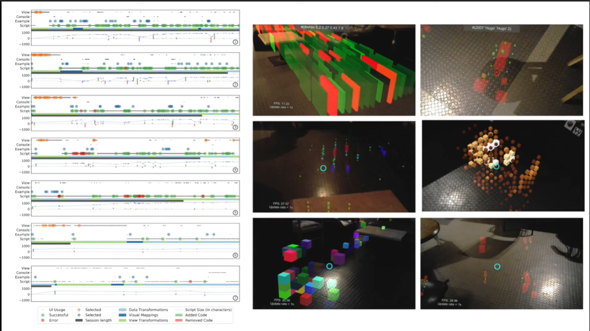

Toward Agile Situated Visualization: An Exploratory User Study

Venue. CHI (2020) Extended Abstract
Authors. Leonel Merino, Boris Sotomayor-Gómez, Xingyao Yu, Ronie Salgado, Alexandre Bergel, Michael Sedlmair, Daniel Weiskopf
Abstract. We introduce AVAR, a prototypical implementation of an agile situated visualization (SV) toolkit targeting liveness, integration, and expressiveness. We report on results of an exploratory study with AVAR and seven expert users. In it, participants wore a Microsoft HoloLens device and used a Bluetooth keyboard to program a visualization script for a given dataset. To support our analysis, we (i) video recorded sessions, (ii) tracked users' interactions, and (iii) collected data of participants' impressions. Our prototype confirms that agile SV is feasible. That is, liveness boosted participants' engagement when programming an SV, and so, the sessions were highly interactive and participants were willing to spend much time using our toolkit (i.e., median ≥ 1.5 hours). Participants used our integrated toolkit to deal with data transformations, visual mappings, and view transformations without leaving the immersive environment. Finally, participants benefited from our expressive toolkit and employed multiple of the available features when programming an SV.